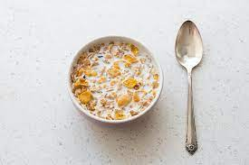

Cereals Recipe

Description
Making perfect homemade Cereals doesnt have to be tedious.
This top-rated easy recipe comes together quickly with a relatively short ingredient list.
List of Ingredients
- Milk: 3 to 4 eggs
- Cereals: Put around the dish bake before baking
- Sugar: To Give Some Flavour
Step by Step
- Put the Milk.
- Add Cereals
- Add sugar
- Mix All